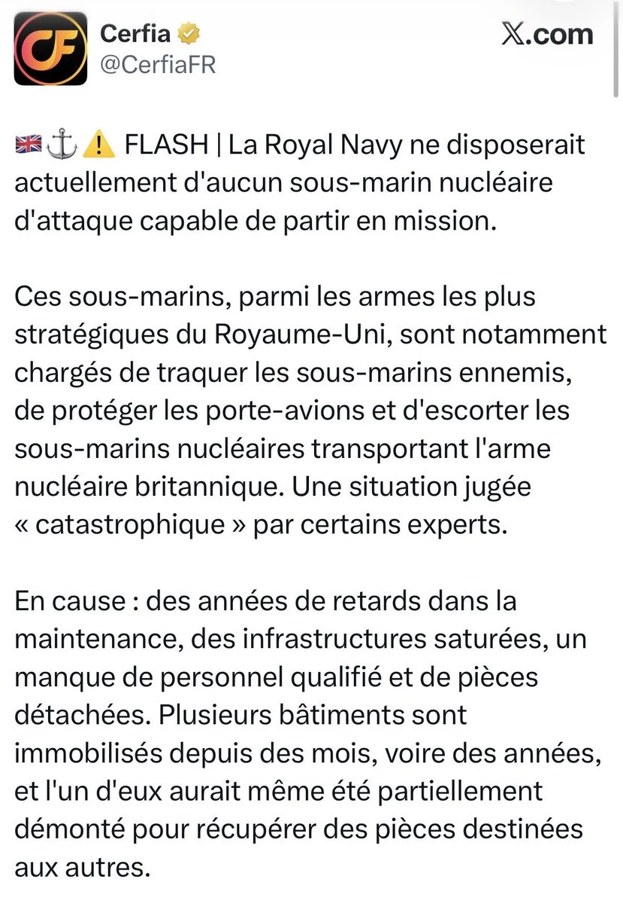

Publication sur X
Sous-marins britanniques. Notre réaction à un message sur la disponibilité de la flotte
Date de publication sur X · 1 juillet 2026
Repères éditoriaux
La publication réagit à une capture concernant les sous-marins d’attaque de la Royal Navy.
Texte de la publication sur X
Deuxième puissance nucléaire de l’OTAN en Europe.
Zéro sous-marin d’attaque en état de prendre la mer.
Ils veulent nous vendre la guerre.
Même l’industrie de mort n’échappe pas aux intérêts du capital et des bénéfices immédiats. https://t.co/NtMigecCIY

Sources
PCF 79 · @79Parti sur X · AR-0005-TW-2072254214806360184